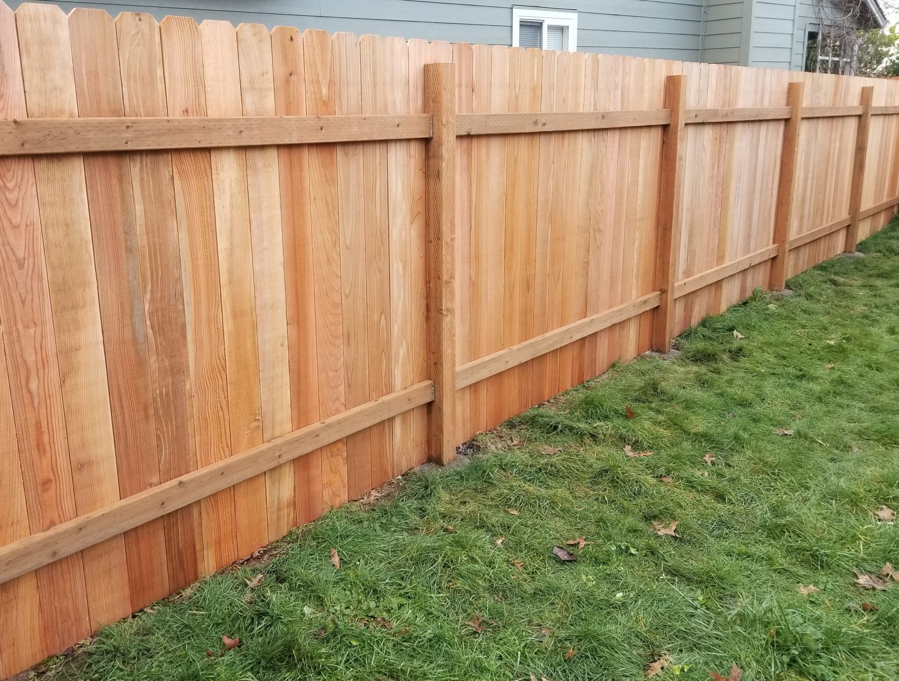
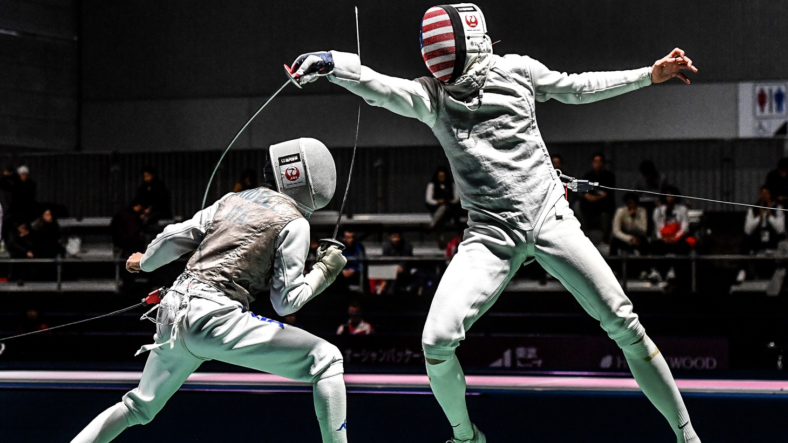

Welcome to my website describing one of my geniuses and passions, fencing!

No, not the fencing in
your yard. Fencing the sport. Here is some general info about fencing as a sport:
| 
|
Fencing is similar to a martial art, and at its core is a sword duel between two athletes. This may seem
scary at first, but fencing is nearly entirely contactless and safety equipment such as a mask makes it
incredibly safe. The blades used are also entirely dull at the tip. See the gallery for images of the three
weapons used.
Why I love fencing:
- I first got into fencing in elementary school due to my friend inviting me to a 'swordplay' class. As
someone who was into medieval combat, I couldn't turn down this offer.
- Fencing is very much a mind game with your opponent, similar to chess. It is all about analyzing the
actions your opponent is making to inform your next moves and outsmart them. I would say this mental
aspect makes up more than half the sport, which I find super fun.
- No particular physique has any advantage. One gripe that I have with sports such as basketball is that
being tall is an incredible advantage, and being short makes the sport very difficult. In fencing,
different physiques each have their own advantages which can be maximized. (For example, although
someone who is short may have a smaller reach, they are often quite quick).
- The coaches, friends, and competitors I've met along the way.
General rules:
The rules of fencing are very complicated, and to make things worse, there are three different weapons,
which each have their own ruleset. I will try my best to give a general overview for each weapon. I
personally have always done foil, which is most popular in the US.
- General rules:
- Depending on the round of the tournament, bouts either go to 5 or 15 touches.
- The bout is dictated by the referee, who instructs the fencers when combat begins and ends,
keeps score, and keeps time.
- The fencers must behave during the bout. Otherwise, the referee can card them or disqualify them
entirely.
- Foil:
- In foil, you must hit with the tip of the blade to score a touch.
- The valid target area is only the torso from the hip bones up to the shoulder, not including the
arms.
- In the event that both fencers hit each other at the same time, the touch goes to the fencer
with right of way. This is the most complicated part of the rules, but generally, right of way
is held by the fencer who is either attacking, or has most recently made a parry (successfully
blocked an attack).
- Epee:
- In epee, you must also hit with the tip of the blade to score a touch.
- Unlike foil, the valid target area is anywhere on the body, including the mask and toes.
- In the event that both fencers hit at the same time, the touch is awarded to both fencers.
- Saber:
- In saber, you can hit with the tip of the blade, but also the side of the blade to score a
touch.
- The valid target area in saber is the same as foil, but also the mask and arms of the fencer.
- With both fencers scoring at the same time, the touch is awarded according to right of way,
which works the same as in foil.
Be sure to check out the gallery page for cool photos and more info.